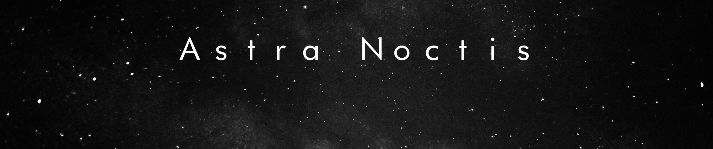
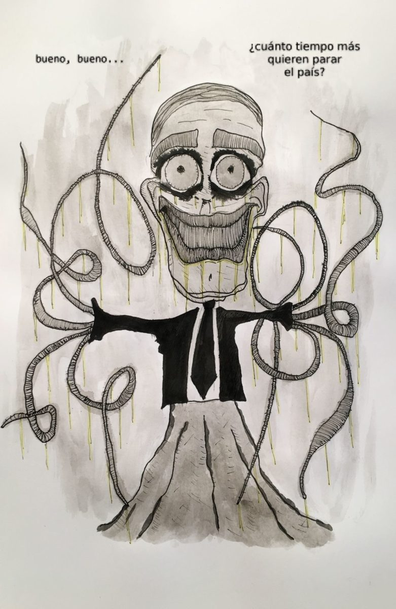
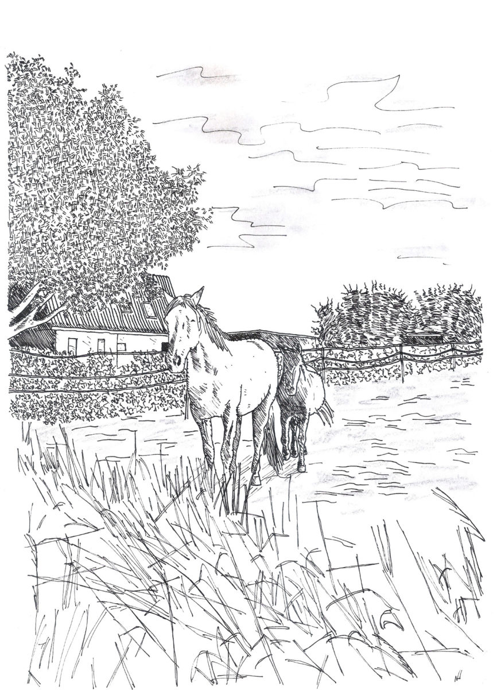
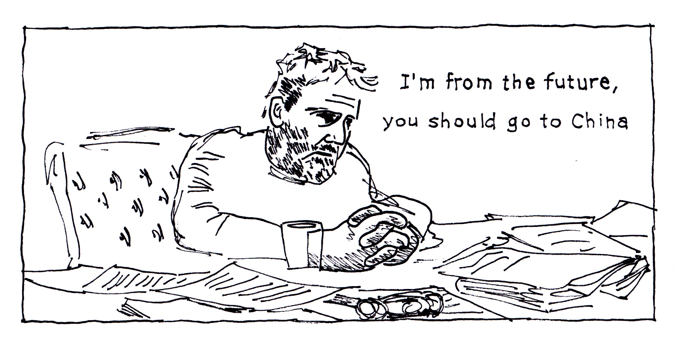
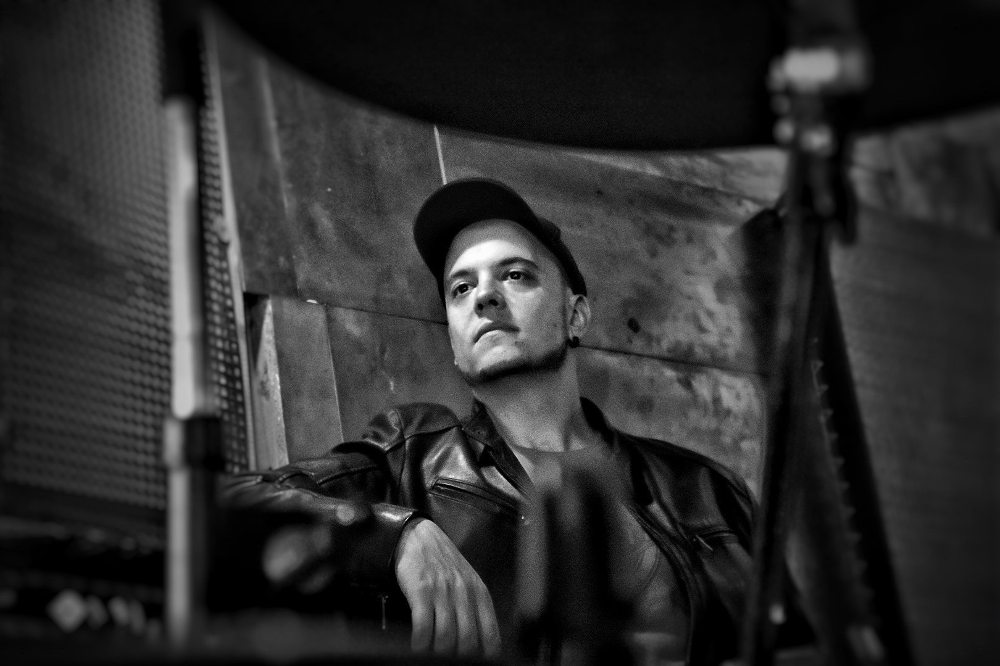
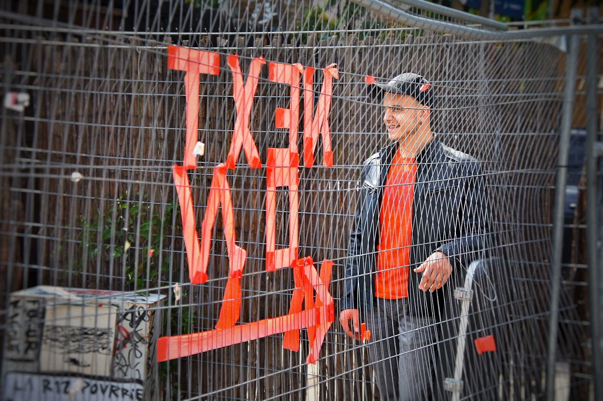
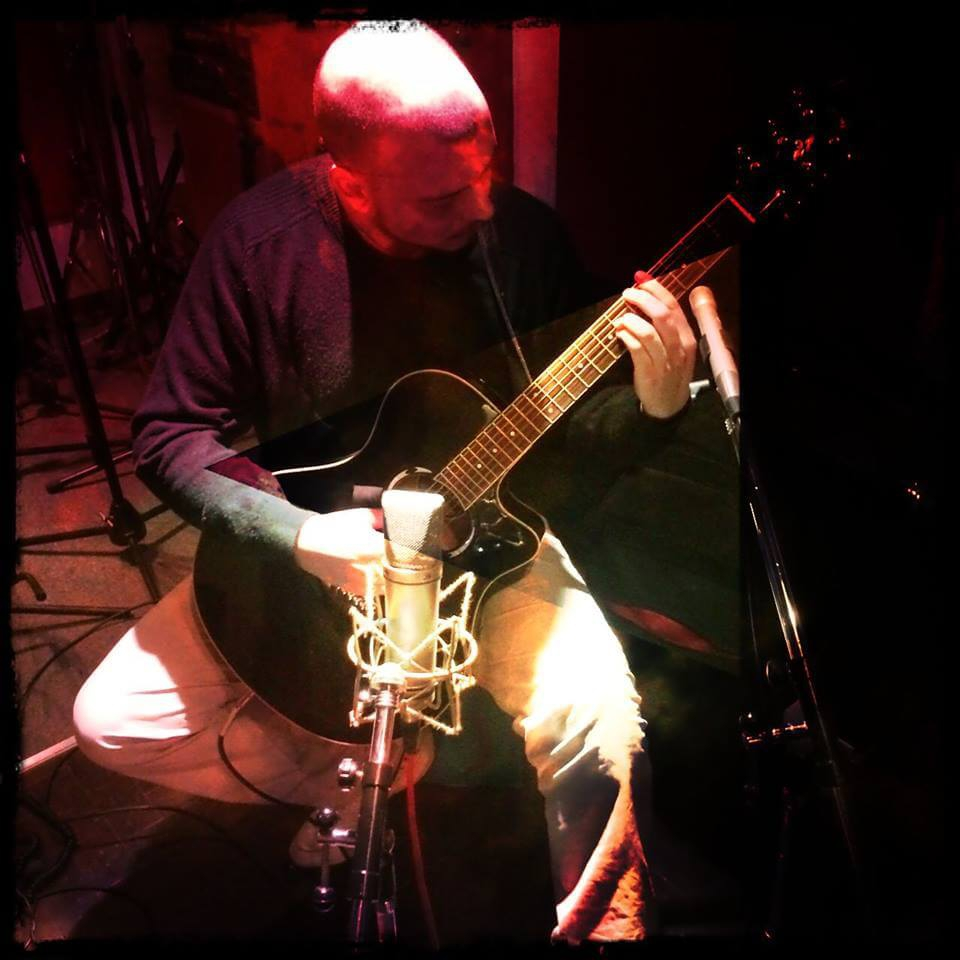
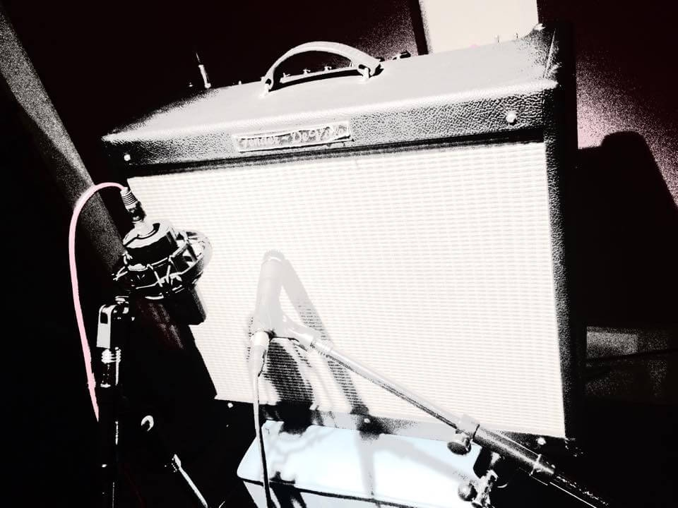
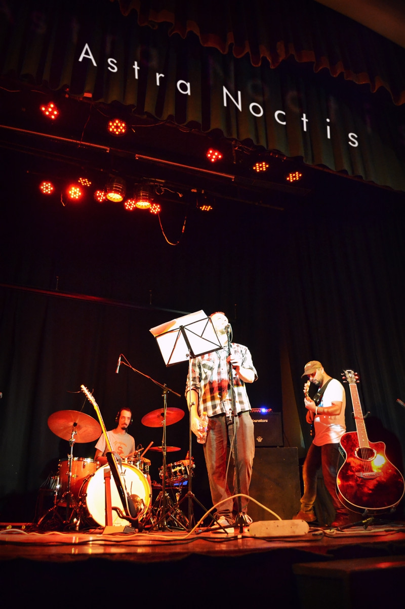

Más música por favor …
August 4, 2023
My music is now available on multiple streaming platforms including Spotify, iTunes, YouTube Music, Amazon, and Deezer. Check out my new song "Too Late" available on Spotify!
Welcome. Here you can find my music, info on upcoming concerts, and links to the various artistic projects I carry on — plus photos, illustrations, and other things I'll be uploading from time to time.
August 4, 2023
My music is now available on multiple streaming platforms including Spotify, iTunes, YouTube Music, Amazon, and Deezer. Check out my new song "Too Late" available on Spotify!
July 23, 2022
I finally updated my SoundCloud account. Check it out and say hi.
May 12, 2020
Naranjo en flor is a tango composed by Virgilio and Homero Expósito in 1944. It's considered one of the most characteristic tangos of Río de la Plata music. Solo guitar arrangement.
March 11, 2020
Guitar arrangement of Volver, a famous tango composed by Carlos Gardel in 1934, with lyrics by Alfredo Le Pera.
August 1, 2019
Recording at "KellerTone", a recording studio located in the basement of an old Berlin building in the Wedding neighborhood. Recording tango music from the 1930s and 1940s. Peter Kolpakov, the studio owner, described it as "a time machine."
Solo guitar arrangements of classic tangos from the 1930s and 1940s. Traditional Argentine tango repertoire featuring beloved compositions by Carlos Gardel and other masters.
Musical project exploring contemporary sounds and experimental compositions.
@mr.tofu.music
Atmospheric and cinematic musical journey through sound and emotion.
@astra.noctisTango-related musical project with connections to the Conurbano region of Argentina.

Well, well… ¿how much longer you want the country idle?
March 29, 2020Redacta, Aprueba (Write, Approve)
March 29, 2020
Caballitos daneses (Danish Horsies)
November 17, 2018
I'm from the future, you should go to China
September 18, 2018Guitarist, composer, and singer based somewhere between Argentina, Portugal, and Germany. This site is a loose archive of things I make — music, recordings, whatever else — updated whenever it gets updated.
I also work as a Senior Software Engineer specializing in Python, AWS, and distributed systems. You can find my professional profile on LinkedIn and my independent VST plugin label at Japas Audio.
Photos by Santiago Casal
Yard Guerrilla Records, Berlin
Yard Guerrilla Records, Berlin
Yard Guerrilla Records, Berlin

Endless guitar arrangements at DQV Studio

RAW Berlin
In RAW Gelände, Berlin

Recording «Un Valle»
Fender Deluxe

Soloing time?

Astra Noctis at Sala Mentruyt
For comments, questions or private concerts please write to: